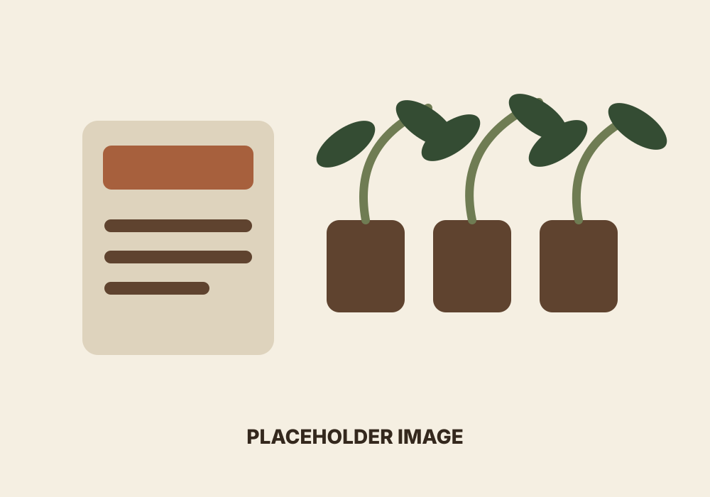
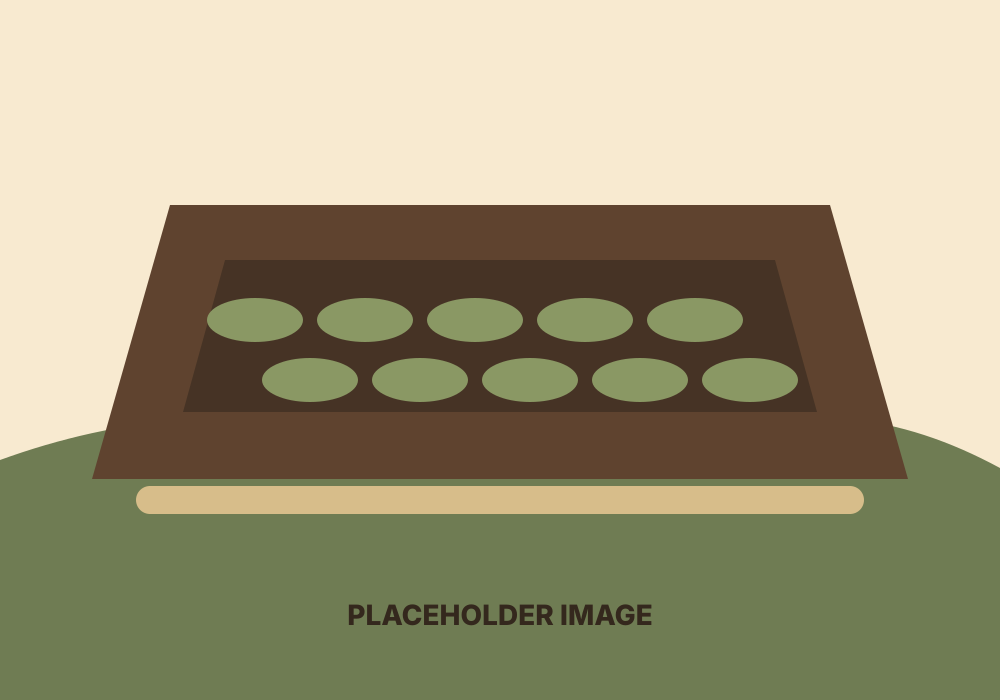
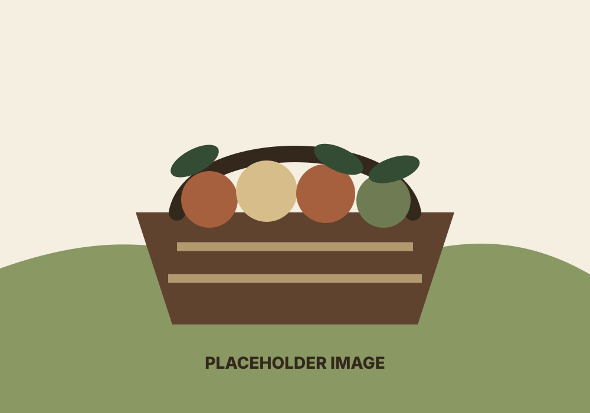

Start
Seed starting
Planning trays, labeling varieties, tracking germination, and learning what seedlings need in their first weeks.
Plants
Our plant projects help the kids learn observation, patience, record keeping, resourcefulness, and the work it takes to bring something from seed to harvest. We offer our extra seasonal starter plants in pots from 2 to 8 inches when available.
Starter plants are sold locally only. Seeds may be available through our Etsy shop.
 Placeholder image
Placeholder image
Showcase

Start
Planning trays, labeling varieties, tracking germination, and learning what seedlings need in their first weeks.

Tend
Watering, weeding, soil care, pest checks, and comparing what thrives in different parts of the garden.

Harvest
Harvesting at the right time, sorting, preserving, sharing, and noting what to improve next season.
Plant care
Use the Plant Care page for locally focused notes on planting, watering, soil, harvest timing, and common issues for our 2- to 8-inch starter plants.
Lessons
Seeing small changes early and learning to ask why they are happening.
Taking responsibility for living things through regular care.
Understanding that some results cannot be rushed.
Connecting weather, soil, insects, water, sunlight, and effort.